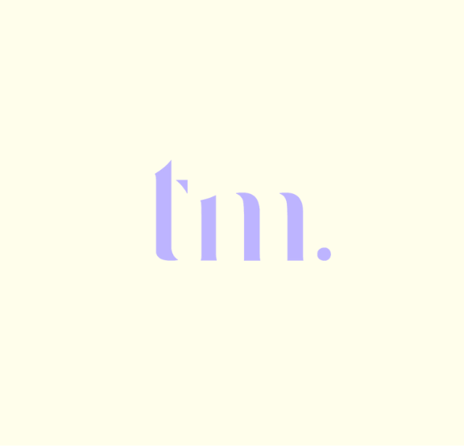

Hello there, Teresa here.
Junior Graphic Designer & Web developer
Hey there! I'm a multi-faceted creative soul ready to rock your design world! 🎨 As a graphic designer and frontend web developer, I've got the best of both worlds. With a diverse background in editorial design, packaging, marketing, and promotional assets, I'm your one-stop-shop for all things visual. But wait, there's more! I also bring my designs to life through web design and frontend development – it's like magic on the internet! ✨ What drives me is the passion to make people's lives better through my creations. I live for aesthetics, and each pixel and brushstroke has a piece of my heart in it.